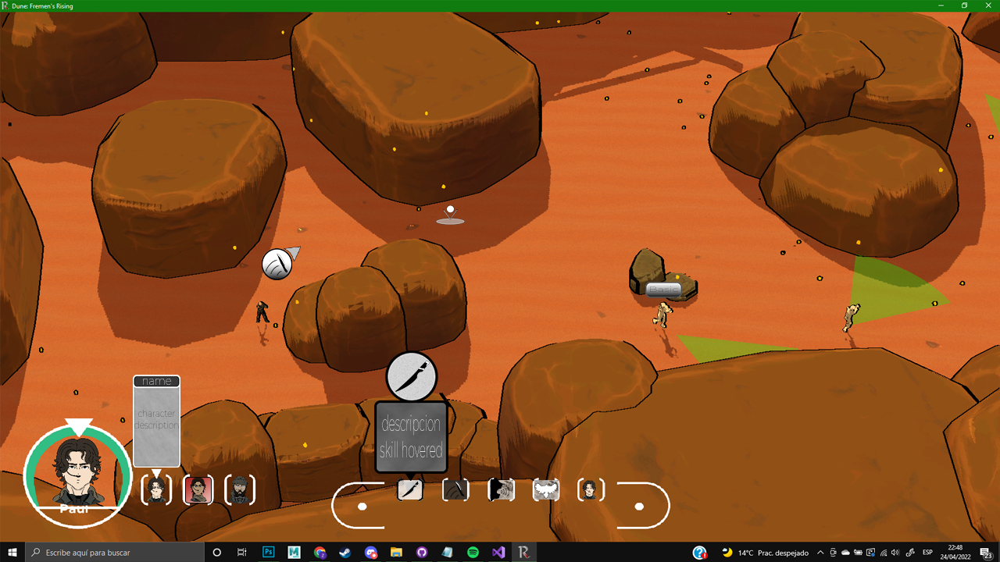
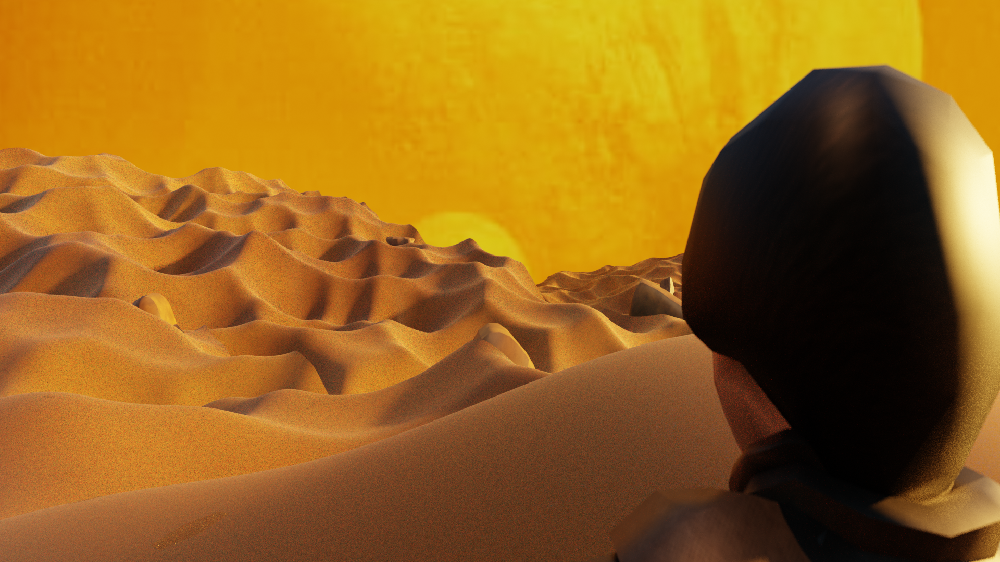
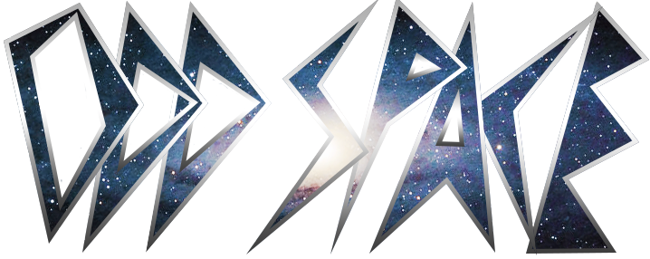
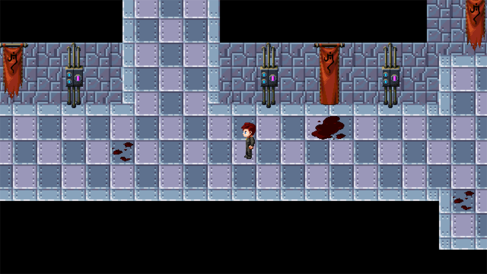
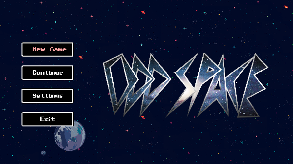
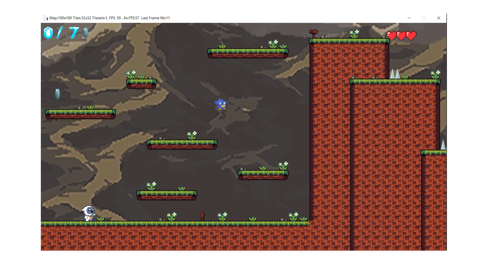
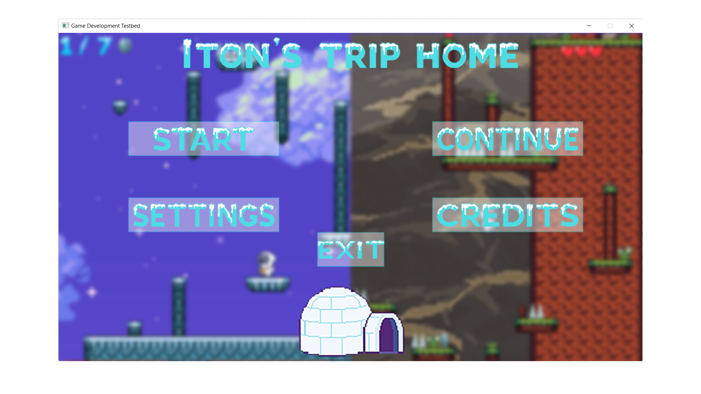
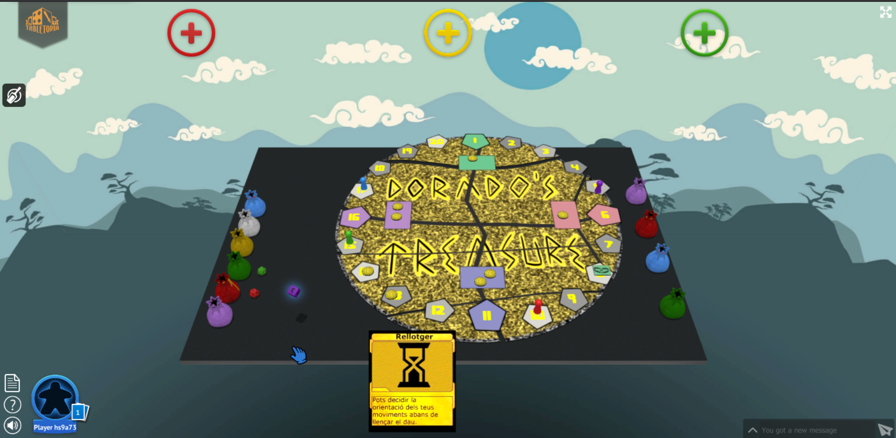

TFG: Cyber city y Ruined city
Dune: Fremen's Rising
Juego 3D de sigilo y acción ambientado en el universo de Dune. Fue el proyecto final de mi carrera universitaria. Participé en el equipo de arte, encargándome de la búsqueda de sonidos, diseño de cinemáticas y apoyo en tareas de diseño del juego. Además, diseñé elementos de UI y otros recursos visuales.
 Odd Space
RPG por turnos con una historia en el espacio, mezclando piratas Fui diseñador en este proyecto final, que contiene una mazmorra principal y dos mapas adicionales. Me encargué del diseño de UI, narrativo y de mapas. Aunque el equipo original se disolvió, este juego está pensado para ser retomado y rediseñado a futuro.
 Iton's Trip Home
Minijuego de plataformas centrado en la práctica de diseño de niveles, UI y mecánicas básicas. Una experiencia breve pero útil en mi formación como diseñador.
 Golf Kart Golf
Minijuego arcade en 3D en el que los jugadores empujan pelotas con un carrito de golf para hacer puntos. Un proyecto divertido con enfoque en físicas y puntuación.
Fragments
Proyecto de diseño narrativo que disfruté especialmente durante la carrera. Junto a dos compañeros, creamos el mundo y la historia de un RPG en profundidad. Aunque no cuenta con un prototipo jugable, contiene una narrativa tipo "elige tu propia aventura". Aquí se incluirá un resumen narrativo próximamente.
El dorado's treasure
Este es el juego de mesa que diseñamos entre 4 miembros del equipo, incluye cartas poteciadoras al estilo de clases así como mecanicas distintivas que afectan a la mesa y con un componente de azar ya que muchas situaciones dependerán de una tirada de dados sumando o restando potenciadores

Habilidades
- Diseño de UI
- Diseño narrativo
- Diseño de niveles
- Unity
- Unreal Engine
- Cinemáticas
- Edición de sonido
- Diseño de mapas
- Operador de camara
- Editor de video
Contacto
¿Quieres ponerte en contacto conmigo? Escríbeme a: polpallares3@gmail.com